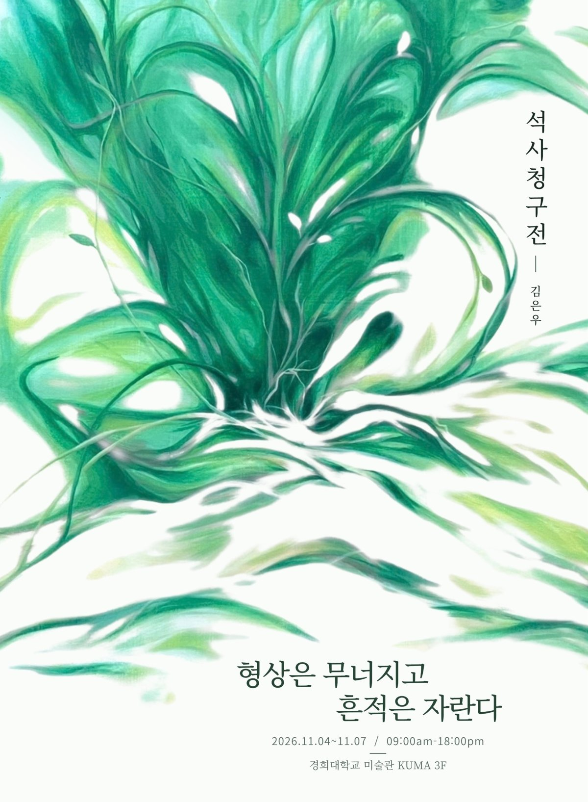

형상은 무너지고,
흔적은 자란다

- VENUE
- 경희대학교 미술관 KUMA 3F
- DATES
- 2026. 11. 04 — 11. 07
- HOURS
- 09:00 — 18:00
손과 잡초라는 두 형상을 통해 관계가 생겨나고 변해가는 과정을 담아낸 전시. 두 형상이 관계를 맺어가는 과정을 접촉, 중첩, 침투, 침식, 생성, 해체의 여섯 단계로 펼쳐 놓는다.
경희대학교 일반대학원 미술학과 석사학위청구전종종 누군가를 이해했다고 믿는다. 그러나 그 순간에도 관계는 이미 다른 곳으로 흘러가고 있다. 하나의 이름으로 붙잡힌 관계는 멈춘 듯 보이지만, 그 아래에서는 보이지 않는 잡초의 뿌리처럼 쉼 없이 뻗고 갈라지며 새로운 길을 낸다.
〈형상은 무너지고, 흔적은 자란다〉는 손과 잡초라는 두 형상을 통해 관계가 생겨나고 변해가는 과정을 담아낸 전시이다. 손은 타인에게 닿으려는 신체의 의지이자 감각의 통로이며, 잡초는 예측할 수 없는 생명력과 통제할 수 없는 관계의 증식을 상징한다. 작업은 두 형상이 관계를 맺어가는 과정을 접촉, 중첩, 침투, 침식, 생성, 해체의 여섯 단계로 펼쳐 놓는다. 이는 땅에 뿌리를 내리고, 서로 뒤엉키며 틈을 파고들고, 마침내 시들어 흩어지면서도 씨앗을 남기는 잡초의 생애에서 비롯된 것으로, 그 생태적 특성을 관계의 형성과 변화 과정에 겹쳐 놓은 것이다.
관계는 땅에 떨어진 씨앗이 처음 흙에 닿듯, 두 형상이 각자의 윤곽을 지닌 채 조심스럽게 맞닿는 접촉에서 시작된다. 중첩의 단계에서는 이웃한 풀들이 서로 엉켜 자라듯 손의 선과 잡초의 선이 포개지며 어느 쪽에 속하는지 분간하기 어려운 지점이 생겨난다. 이어지는 침투에서는 잡초의 줄기가 손가락 사이로 스며드는 듯한 형상이 다른 형상의 영역 안으로 들어선다. 겹침과 스밈이 거듭되며 관계는 침식으로 나아간다. 잡초의 뿌리가 단단한 땅을 허물어 가듯 경계는 서서히 흐려지고, 손도 잡초도 아닌 혼성의 형상이 드러난다. 생성의 단계에서 그 형상은 빛을 향해 꽃을 피우듯 빛을 머금은 새로운 모습으로 떠오르지만, 마지막 해체에서는 흩어지며 빛이 머물던 자리가 어둠으로 바뀐다. 그럼에도 시든 잡초가 그 자리에 씨앗을 남기듯, 사라진 자리에는 흔적이 희미하게 남는다.
이 여섯 단계는 차례로 이어지는 듯 보이지만, 하나의 화면 안에서도 어떤 부분은 막 맞닿기 시작하고 어떤 부분은 이미 흩어져 간다. 내가 너에게 스며드는 순간 너 또한 나를 허물고 있듯, 다가가는 일과 무너지는 일은 서로 떨어져 있지 않다. 그렇게 서로에게 남긴 흔적은 이전과는 다른 ‘나’와 ‘너’, 그리고 ‘우리’를 만들어 낸다.
이 전시는 서로에게 남겨진 흔적을 기록하며, 관계 속에서 끊임없이 달라지는 경계의 궤적을 따라간다. 서로 다른 존재가 만나 영향을 주고받는 과정에서 경계는 형성되고 허물어지기를 반복하며, 그 안에서 각자의 모습 또한 달라진다. 이를 통해 하나의 모습으로 규정할 수 없는 존재와 관계의 변화를 살펴보고, 서로의 만남이 남기는 흔적과 그 의미를 드러내고자 한다.